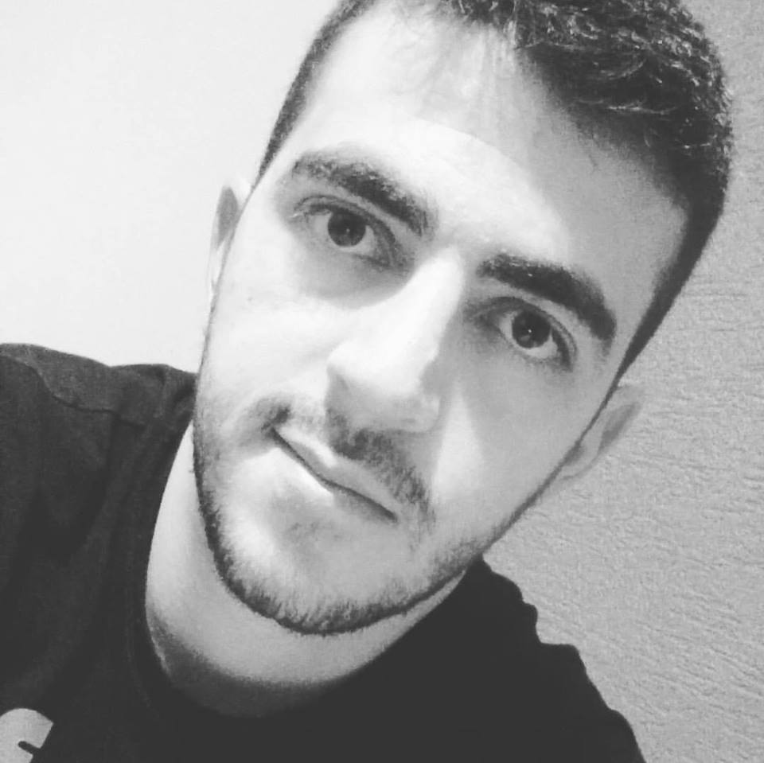

Alexandre Fernandes é um dos colaboradores da equipe RLT (Rocket League Team) que, em parceria com os outros membros da equipe, ajuda a manter e atualizar a Comunidade com as informações históricas desse jogo digital muito aclamado.
Antes de entrar para o RLT, Alexandre se dedicava a outros títulos de renome no mercado, como FIFA e Need for Speed. Apaixonado por esportes (especialmente o futebol) e admirador do genêro de corrida automotiva, viu no Rocket League a chance de juntar os dois mundos que sempre o guiaram no ramo de entretenimento digital.
Focando em plataformas exclusivas (Playstation 4), confessa que as vezes divide seu tempo com outros títulos, como Rainbow Six Siege e Fortnite, mas se empenha para buscar informações e manter a comunidade sempre a par das novidades do Rocket League através desse site.
Júlio César Santos é um dos colaboradores da equipe RLT (Rocket League Team) que, em parceria com os outros membros da equipe, ajuda a manter e atualizar a Comunidade com as informações históricas e notícias em primeira mão de novas temporadas, carros, acessórios e muito mais.
Antes de entrar para o RLT, Júlio César se dedicava a jogos de tiro em primeira pessoa em mundo aberto, tais como a série FarCry. Viu no RLT a oportunidade de novos horizontes no esporte, estando atualmente no nível de Rocketeer e extremamente apaixonado por este jogo que reúne milhares de pessoas apaixonadas por basquete e futebol de carros.